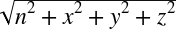

1Appendix C. Quaternion Operations
2This appendix implements a class called 2Quaternion14630 that encapsulates all of the operations you need to handle quaternions when writing 3D rigid-body simulations.
4Quaternion Class
5The 5Quaternion5 class is defined 7with a scalar component, 7n7, and vector component, 7v7, where 7v7 is the vector, × 7i7 + y 7j7 + z 7k14635 . 8 The class has two constructors, one of which initializes the quaternion to 0, and the other of which initializes the elements to those passed to the constructor:
class Quaternion {
public:
float n; // number (scalar) part
Vector v; // vector part: v.x, v.y, v.z
Quaternion(void);
Quaternion(float e0, float e1, float e2, float e3);
float Magnitude(void);
Vector GetVector(void);
float GetScalar(void);
Quaternion operator+=(Quaternion q);
Quaternion operator-=(Quaternion q);
Quaternion operator*=(float s);
Quaternion operator/=(float s);
Quaternion operator~(void) const { return Quaternion( n,
-v.x,
-v.y,
-v.z);}
};
// Constructor
inline Quaternion::Quaternion(void)
{
n = 0;
v.x = 0;
v.y = 0;
v.z = 0;
}
// Constructor
inline Quaternion::Quaternion(float e0, float e1, float e2, float e3)
{
n = e0;
v.x = e1;
v.y = e2;
v.z = e3;
}11Magnitude
13The method 13Magnitude13 returns the 15magnitude of the quaternion according to the following formula:
| 15|15q15| =  |
20Here's the code that calculates the magnitude for our 20Quaternion20 class:
inline float Quaternion::Magnitude(void)
{
return (float) sqrt(n*n + v.x*v.x + v.y*v.y + v.z*v.z);
}25The method 25GetVector25 returns 14654the vector part of the quaternion. 27 This method uses the 27Vector27 class defined in 28Appendix A28:
inline Vector Quaternion::GetVector(void)
{
return Vector(v.x, v.y, v.z);
}34The method 34GetScalar34 returns the 35scalar part of the quaternion:
inline float Quaternion::GetScalar(void)
{
return n;
}41This operator 46performs quaternion addition by simply adding the quaternion, 46q14674 , to the current quaternion on a component-by-component basis.
49If 49q49 and 49p49 are two quaternions, then:
| 49q49 + 49p49 = [n49q49 + n49p49, (x49q49 + x49p49) 49i49 + (y49q49 + y49p49) 49j49 + (z49q49 + z49p49) 49k49] |
54Quaternion addition is both associative and commutative; thus:
| 54q54 + (54p54 + 54h54) = (54q54 + 54p54) + 54h |
| 54q54 + 54p54 = 54p54 + 54q |
56Here's the code that adds the quaternion 56q56 to our 56Quaternion56 class:
inline Quaternion Quaternion::operator+=(Quaternion q)
{
n += q.n;
v.x += q.v.x;
v.y += q.v.y;
v.z += q.v.z;
return *this;
}61This operator performs 66quaternion subtraction by simply subtracting the quaternion, 66q14694 , from the current quaternion on a component-by-component basis.
69If 69q69 and 69p69 are two quaternions, then:
| 69q69 − 69p69 = 69q69 + (−69p69) = [n69q69 − n69p69, (x69q69 − x69p69) 69i69 + (y69q69 − y69p69) 69j69 + (z69q69 − z69p69) 69k69] |
74Here's the code that subtracts the quaternion 74q74 from our 74Quaternion74 class:
inline Quaternion Quaternion::operator-=(Quaternion q)
{
n -= q.n;
v.x -= q.v.x;
v.y -= q.v.y;
v.z -= q.v.z;
return *this;
}79This operator simply multiplies 84each component in the quaternion by the scalar 84s14712 . 85 This operation is similar to scaling a vector, as described in 86Appendix A86:
inline Quaternion Quaternion::operator*=(float s)
{
n *= s;
v.x *= s;
v.y *= s;
v.z *= s;
return *this;
}92This operator simply 97divides each component in the quaternion by the scalar 97s97:
inline Quaternion Quaternion::operator/=(float s)
{
n /= s;
v.x /= s;
v.y /= s;
v.z /= s;
return *this;
}102This operator takes the106 conjugate of the quaternion, ~106q14734 , which is simply the negative of the vector part. 107 If 107q107 = [107n107, 107x 107i107 + 107y 107j107 + 107z 107k107], then ~107q107 = [107n107, (−107x107) 107i107 + (−107y107) 107j107 + (−107z107) 107k14735 ].
110The conjugate of the product of quaternions is equal to the product of the quaternion conjugates, but in 111reverse order:
| 111~(111qp111) = (~111p111)(~111q111) |
114Here's the code that computes the conjugate for our 114Quaternion114 class:
Quaternion operator~(void) const { return Quaternion( n,
-v.x,
-v.y,
-v.z);}119The functions and overloaded 14748operators that follow are useful when you are performing operations with two quaternions, or with a quaternion and a scalar, or a quaternion and a vector. 121 Here, the quaternions are assumed to be of the type 121Quaternion121, and vectors of the type 121Vector121, as discussed in 122Appendix A14751 .
125Quaternion Addition: The + Operator
126This operator 130performs quaternion addition by simply adding the quaternion 130q1130 to quaternion 130q2130 on a component-by-component basis:
inline Quaternion operator+(Quaternion q1, Quaternion q2)
{
return Quaternion( q1.n + q2.n,
q1.v.x + q2.v.x,
q1.v.y + q2.v.y,
q1.v.z + q2.v.z);
}135This operator performs 139quaternion subtraction by simply subtracting the quaternion 139q2139 from quaternion 139q1139 on a component-by-component basis:
inline Quaternion operator-(Quaternion q1, Quaternion q2)
{
return Quaternion( q1.n - q2.n,
q1.v.x - q2.v.x,
q1.v.y - q2.v.y,
q1.v.z - q2.v.z);
}144This operator performs 148quaternion multiplication according to the following formula:
| 148q p148 = n148q148 n148p148 − 148v148q148 • 148v148p148 + n148q 148v148p148 + n148p 148v148q148 + (148v148q148 × 148v148p148) |
154Quaternion multiplication is associative but not commutative; thus:
| 154q154(154ph154) = (154qp154)154h |
| 154qp154 ≠ 154pq |
156Here's the code that multiplies two 156Quaternion156s, 156q1156 and 156q2156:
inline Quaternion operator*(Quaternion q1, Quaternion q2)
{
return Quaternion(q1.n*q2.n - q1.v.x*q2.v.x
- q1.v.y*q2.v.y - q1.v.z*q2.v.z,
q1.n*q2.v.x + q1.v.x*q2.n
+ q1.v.y*q2.v.z - q1.v.z*q2.v.y,
q1.n*q2.v.y + q1.v.y*q2.n
+ q1.v.z*q2.v.x - q1.v.x*q2.v.z,
q1.n*q2.v.z + q1.v.z*q2.n
+ q1.v.x*q2.v.y - q1.v.y*q2.v.x);
}161This operator simply multiplies165 each component in the quaternion by the scalar 165s14793 . 166 There are two forms of this operator, depending on the order in which the quaternion and scalar are encountered:
inline Quaternion operator*(Quaternion q, float s)
{
return Quaternion(q.n*s, q.v.x*s, q.v.y*s, q.v.z*s);
}
inline Quaternion operator*(float s, Quaternion q)
{
return Quaternion(q.n*s, q.v.x*s, q.v.y*s, q.v.z*s);
}171This operator multiplies the 175quaternion 175q175 by the vector 175v175 as though the vector 175v14803 were a quaternion with its scalar component equal to 0. 14804 There are two forms of this operator, depending on the order in which the quaternion and vector are encountered. 177 Since 177v177 is assumed to be a quaternion with its scalar part equal to 0, the rules of multiplication follow those outlined earlier for quaternion multiplication:
inline Quaternion operator*(Quaternion q, Vector v)
{
return Quaternion( -(q.v.x*v.x + q.v.y*v.y + q.v.z*v.z),
q.n*v.x + q.v.y*v.z - q.v.z*v.y,
q.n*v.y + q.v.z*v.x - q.v.x*v.z,
q.n*v.z + q.v.x*v.y - q.v.y*v.x);
}
inline Quaternion operator*(Vector v, Quaternion q)
{
return Quaternion( -(q.v.x*v.x + q.v.y*v.y + q.v.z*v.z),
q.n*v.x + q.v.z*v.y - q.v.y*v.z,
q.n*v.y + q.v.x*v.z - q.v.z*v.x,
q.n*v.z + q.v.y*v.x - q.v.x*v.y);
}182This operator 186simply divides each component in the quaternion by the scalar 186s186:
inline Quaternion operator/(Quaternion q, float s)
{
return Quaternion(q.n/s, q.v.x/s, q.v.y/s, q.v.z/s);
}191This function191[19230192] extracts the 195angle of rotation about the axis represented by the vector part of the quaternion:
inline float QGetAngle(Quaternion q)
{
return (float) (2*acos(q.n));
}200This function 202returns a unit vector along the axis of rotation represented by the vector part of the quaternion 202q202:
inline Vector QGetAxis(Quaternion q)
{
Vector v;
float m;
v = q.GetVector();
m = v.Magnitude();
if (m <= tol)
return Vector();
else
return v/m;
}207This function 209rotates the quaternion 209p209 by 209q209 according to the formula:
| 209p209' = (209q209)(209p209)(~209q209) |
211Here, ~211q211 is the conjugate of the unit quaternion 211q14839 . 212 Here's the code:
inline Quaternion QRotate(Quaternion q1, Quaternion q2)
{
return q1*q2*(~q1);
}217This function 219rotates the vector 219v219 by the unit quaternion 219q219 according to the formula:
| 219p219' = (219q219)(219v219)(~219q219) |
221Here, ~221q221 is the conjugate of the unit quaternion 221q14849 . 222 Here's the code:
inline Vector QVRotate(Quaternion q, Vector v)
{
Quaternion t;
t = q*v*(~q);
return t.GetVector();
}227This function 14858constructs a quaternion from a set of Euler angles.
| 235q235roll235 = [cos(φ/2), (sin(φ/2)) 235i235 + 0 235j235 + 0 235k235] |
| 235q235pitch235 = [cos(τ /2), 0 235i235 + (sin(τ /2)) 235j235 + 0 235k235] |
| 235q235yaw235 = [cos(ψ /2), 0 235i235 + 0 235j235 + (sin(ψ /2)) 235k235] |
14865Each one of these quaternions is of unit length.238[23931239]
241Now you can multiply these quaternions to obtain a single one that represents the rotation, or orientation, defined by the three Euler angles:
| 241q241 = 241q241yaw 241q241pitch 241q241roll |
242Performing this multiplication yields:
| 242q242 = [ {cos(φ/2) cos(τ /2) cos(ψ /2) + sin(φ/2) sin(τ /2) sin(ψ /2)}, |
| 242{ sin(φ/2) cos(τ /2) cos(ψ /2) - cos(φ/2) sin(τ /2) sin(ψ /2) } 242i242 + |
| 242{ cos(φ/2) sin(τ /2) cos(ψ /2) + sin(φ/2) cos(τ /2) sin(ψ /2) } 242j242 + |
| 242{ cos(φ/2) cos(τ /2) sin(ψ /2) - sin(φ/2) sin(τ /2) cos(ψ /2) } 242k242 ] |
243Here's the code that takes three Euler angles and returns a quaternion:
inline Quaternion MakeQFromEulerAngles(float x, float y, float z)
{
Quaternion q;
double roll = DegreesToRadians(x);
double pitch = DegreesToRadians(y);
double yaw = DegreesToRadians(z);
double cyaw, cpitch, croll, syaw, spitch, sroll;
double cyawcpitch, syawspitch, cyawspitch, syawcpitch;
cyaw = cos(0.5f * yaw);
cpitch = cos(0.5f * pitch);
croll = cos(0.5f * roll);
syaw = sin(0.5f * yaw);
spitch = sin(0.5f * pitch);
sroll = sin(0.5f * roll);
cyawcpitch = cyaw*cpitch;
syawspitch = syaw*spitch;
cyawspitch = cyaw*spitch;
syawcpitch = syaw*cpitch;
q.n = (float) (cyawcpitch * croll + syawspitch * sroll);
q.v.x = (float) (cyawcpitch * sroll - syawspitch * croll);
q.v.y = (float) (cyawspitch * croll + syawcpitch * sroll);
q.v.z = (float) (syawcpitch * croll - cyawspitch * sroll);
return q;
}248This function 14879extracts the three Euler angles from a given quaternion.

260and let 260q260 be a quaternion:
| 260q260 = [n, x 260i260 + y 260j260 + z 260k260] |
262Then each element in 262R262 is calculated from 262q262 as follows:
| 262r26211262 = n2622262 + x2622262 − y2622262 − z2622 |
| 262r26221262 = 2xy+2zn |
| 262r26231262 = 2zx − 2yn |
| 262r26212262 = 2xy − 2zn |
| 262r26222262 = n2622262 − x2622262 + y2622262 − z2622 |
| 262r26232262 = 2zy + 2xn |
| 262r26213262 = 2xz + 2yn |
| 262r26223262 = 2yz − 2xn |
| 262r26233262 = n2622262 − x2622262 − y2622262 + z2622 |
| 264sin τ = −r26431 |
| 264tan φ = r26432264 / r26433 |
| 264tan ψ = r26421264 / r26411 |
inline Vector MakeEulerAnglesFromQ(Quaternion q)
{
double r11, r21, r31, r32, r33, r12, r13;
double q00, q11, q22, q33;
double tmp;
Vector u;
q00 = q.n * q.n;
q11 = q.v.x * q.v.x;
q22 = q.v.y * q.v.y;
q33 = q.v.z * q.v.z;
r11 = q00 + q11 - q22 - q33;
r21 = 2 * (q.v.x*q.v.y + q.n*q.v.z);
r31 = 2 * (q.v.x*q.v.z - q.n*q.v.y);
r32 = 2 * (q.v.y*q.v.z + q.n*q.v.x);
r33 = q00 - q11 - q22 + q33;
tmp = fabs(r31);
if(tmp > 0.999999)
{
r12 = 2 * (q.v.x*q.v.y - q.n*q.v.z);
r13 = 2 * (q.v.x*q.v.z + q.n*q.v.y);
u.x = RadiansToDegrees(0.0f); //roll
u.y = RadiansToDegrees((float) (-(pi/2) * r31/tmp)); // pitch
u.z = RadiansToDegrees((float) atan2(-r12, -r31*r13)); // yaw
return u;
}
u.x = RadiansToDegrees((float) atan2(r32, r33)); // roll
u.y = RadiansToDegrees((float) asin(-r31)); // pitch
u.z = RadiansToDegrees((float) atan2(r21, r11)); // yaw
return u;
}271These two functions 14905are used to convert angles from degrees to radians and radians to degrees. 278 They are not specific to quaternions but are used in some of the code samples shown 279earlier:
inline float DegreesToRadians(float deg)
{
return deg * pi / 180.0f;
}
inline float RadiansToDegrees(float rad)
{
return rad * 180.0f / pi;
}286[28730287] For a description of how quaternions are used to represent rotation, refer to the section 289Quaternions289 in 290Chapter 1114919 .
293[29431294] 294You can verify this by recalling the trigonometric relation cos2942294θ + sin294214923 θ = 1.